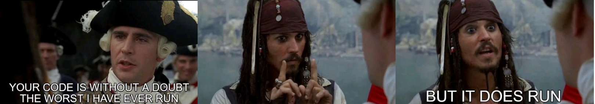

The subject of this website is subject to change based off my whims and whether or not I have a psychology paper due in less than a week please take the time to enjoy that this site is about the idea of designing websites for now, and be excited for other future topics
A list of Future Topics This Website Could Be About!!
- Foxes and the things I think could be pretty if they had foxes in them
- Elbows, boring, or future transgressive trend?
- What's the deal with LED Headlights on the Road?
- The unbearable sadness of being happy
- Why AI totally isn't a bubble this time, seriously guys I just need another 6 billion dollars and it'll work I swear
- and so much more
But the web could look like that again. Do you remember when the web was beautiful and amazing? Before Silicon Valley© sanitized and corpatized it? We could go back! We must return.